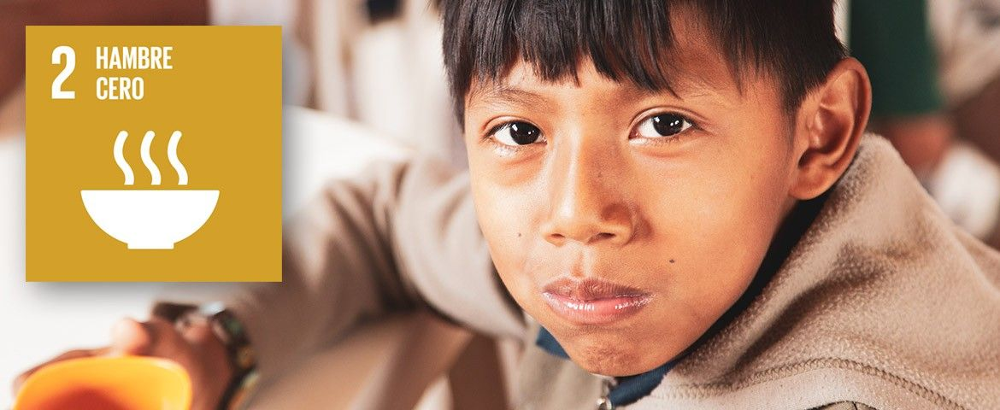
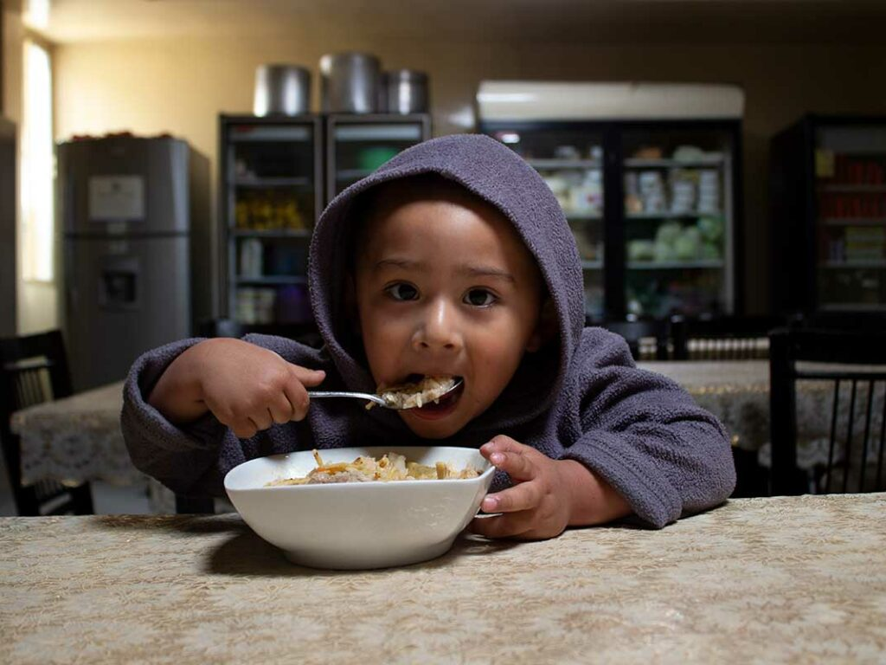
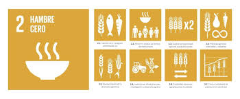

HAMBRE
CERO
¿Qué Somos?
El hambre cero es una pieza clave de la construcción de un futuro mejor para todos. Además, como el hambre frena el desarrollo humano, no podremos lograr los otros Objetivos de Desarrollo Sostenible, como la educación, la salud y la igualdad de género.
Nuestro Objetivo
El objetivo es crear un mundo libre de hambre para 2030. En 2022, aproximadamente 735 millones de personas (o el 9,2 % de la población mundial) se encontraban en estado de hambre crónica.
¿Cómo lo vamos a lograr?
La seguridad alimentaria requiere un enfoque pluridimensional: desde la protección social para salvaguardar alimentos inocuos y nutritivos, especialmente para los niños, hasta la transformación de los sistemas alimentarios para lograr un mundo más inclusivo y sostenible. Será necesario realizar inversiones en zonas rurales y urbanas y en protección social para que las personas más pobres tengan acceso a los alimentos y puedan mejorar sus medios de subsistencia. Puedes contribuir con cambios en tu propia vida (en casa, en el trabajo y en tu comunidad), apoyando a los agricultores o mercados locales y eligiendo alimentos sostenibles.
- 

- 
- 